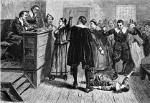

Massachusetts’in Püriten halkı için cadılıktan daha büyük bir suç yoktu. Aynı şekilde Sarah Good’tan (1655-1692) daha büyük bir cadı da tanımıyorlardı. Salem Cadı Yargılamaları sırasında suçlanan ilk kadınlardandı. Good bir sürü genç kızı büyülemekle suçlanıyordu. 1692 yazında idam edildi. Yargılamalar sırasında eşi ve beş yaşındaki kızı bile aleyhinde tanıklık etmeye zorlandılar.

Tabi ki Good bir cadı değildi. Aynen o yaz Salem’de ortalığı kasıp kavuran cadı avı sırasında öldürülen diğer 19 kadın ve erkek gibi. Good, aslına bakılırsa yoksul ve çok da sevilmeyen bir kadındı. Onu müdafaa edecek kimsesi yoktu. Salem Cadı Avı’nın diğer kurbanları ile birlikte dini bağnazlığın ve hoşgörüsüz kitle adaletinin tehlikesini simgeleyen bir figür olarak günümüze kadar ayakta kaldı.
Good, borçları nedeniyle hapse düşmüş yoksul bir adam olan William Good’un eşiydi. Çiftin Dorothy adında bir kızları vardı. Pek çok diğer kurban gibi o da düşük bir sosyal statüye sahipti. Good, Salem’de pek sevilmiyordu. Kaba, dağınık ve yardıma muhtaç biri olarak görülüyordu.
Yargılama 1692 yılının Şubat ayında başladı. Üç genç kız komşularını kendilerini büyülemekle suçladılar. İlk olarak Good ve iki başka kadın bu suçlamayla yargılandı. Yargılama sırasında diğer kasabalılar da çeşitli suçlamalarda bulundular. Birisi Good’u süpürge üzerinde uçarken gördüğünü söyledi. Bir başkası onun sihirli güçlerini kediler ve kuşlar üzerinde denediğini iddia etti. Beş yaşındaki kızı da tutuklanmış ve annesi aleyhine ifade vermeye zorlanmıştı.
Darağacına götürüldüğü sırada Good’un hâlâ masum olduğunu söylediği iddia edilmektedir. Papaza “sen bir yalancısın” demişti. “Ben senin büyücü olduğundan daha fazla cadı değilim. Eğer sen benim canımı alırsan Tanrı sana kan içirecek.” Good idam edildiği sırada otuz yedi yaşındaydı.
Cadı avı, sömürgenin sivil ve dini liderlerinin desteğini almıştı. Ancak yılın sonuna doğru mahkeme kapatıldı. Yirmi yıl sonra kurbanlara itibarları iade edildi ve ailelerine tazminat davası açma hakkı tanındı. Good’un dul eşinin titrek el yazısı ile mahkemeye yazdığı başvuru mektubu, yargılama ve idam sürecine son noktayı koyuyordu: “Yoksul ailemin yıkılmasından dolayı nasıl bir zarar gördüğümün takdirini saygı değer mahkemeye bırakıyorum.”
Ek Bilgiler
1- Salem cadı yargılamalarının bütün kurbanları Massachusetts valisi Jane Swift (1965-) tarafından 2001 yılında resmen masum ilan edildi.
2- Good’u ve diğerlerini mahkum eden hakimlerden biri John Hathorne’du (1641-1717). Hathorne romancı Nathaniel Hawthorne’un (1804–1864) büyük büyük büyükbabasıdır.
3- Oyun yazarı Arthur Miller (1915–2005), Salem yargılamalarını temel alarak “The Crucible” (Cadı Kazanı / 1953) oyununu yazdı. McCarty döneminde yazılan oyun, 17. yy’da yaşanan cadı avı ile 1950’lerin Amerikası’ndaki anti-komünist paranoya atmosferini kıyaslıyordu. Oyundaki karakterlerden biri de Good’dur.